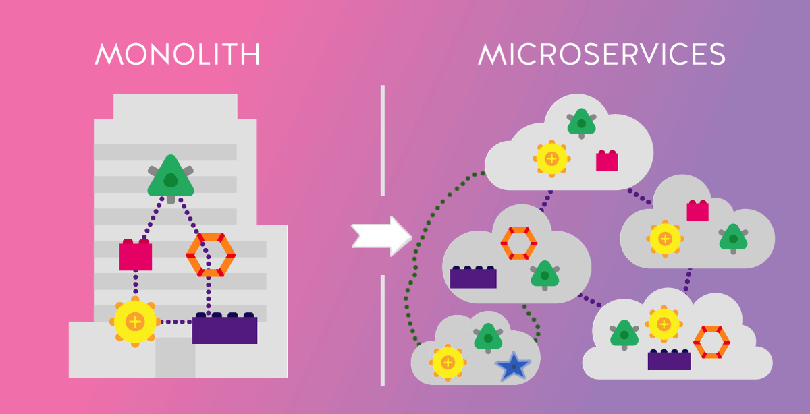
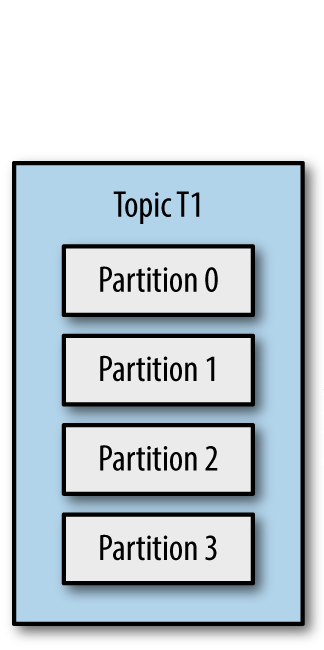

Построение микросервисных систем с использованием Kafka
Добры день, меня зовут Николай Сасковец.
Последние чуть более чем пол года я занимался тем, что помогал команде перенести монолитное приложение на микросервисные рельсы.
И в центр нашего решения мы поместили Кафку. А ещё я на этом мероприятии почему-то объявлен как питон-разработчик, поэтому некоторые слайды будут питон-специфичны. Уж простите.[ ... ... ... ... ]
Кстати! Поднимите пожалуйста руки, кто уже писал что-то с Кафкой, исползует ее в проектах.
А еще поднимите те, кто про Кафку хорошенько читал.
И так, на руках у нас был монолит. Руковтворное чудо.
Всем хорош!...
Monolithic MVP
Scalability issues
Readability issues
Maintainability issues
Security issues
Кроме того, что совершенно не держал нагрузку, код был очень запутан и были вопросы по безопасности...
Настоящий MVP, одним словом...
И если для тестовых пятиста пользователей и пары видов спорта это было нормально, то для более широкой публики это уже было неприемлемо. Да и видов спорта должно было стать больше к моменту выхода в продекшен.
Да, наше приложение было про спорт и нам приходилось работать с большим количеством спортивных данных, приходящих из внешних источников. В том числе и в режиме реального времени.
И нужно было как-то с этим справляться.
И серебрянной пулей мы выбрали микросервисы.
Конечно, все мы прекрасно знаем, что микросервисы решают все наши проблемы!
Но действительно ли это так?
Вот у нас был монолит. Мы разбросали его куски по облачкам микросервисов и наладили связи между ними. Общаются у нас микросервисы, допустим, через REST API.
А наше приложение начало расти, микросервисов стало больше.

Связей между сервисами начинает становиться больше
И еще больше!
Пока у нас не начинает возникать мысль, что каждый сервис общается с каждым, и может быть не по одному разу. Но это не точно.
Microservices: Coupling and Cohesion?
И так, у нас рано или поздно может возникнуть понимание, что сервисы-то у нас чересчур друг от друго зависимы, высокая связность у нас в нашей микросервисной архитектуре...
Distributed Monolith?
А микросервисное ли у нас вообще приложение, или какой-то, простите, распределенный монолит?!
Ну... это все конечно слова... теория!
Microservices: Synchronous Communication
( REST API )
Давайте рассмотрим практический случай.
Вот у нас запрос от пользователя. Он затрагивает три микросервиса.
Запросы идут последовательно,... павольна! не быстро, то есть.
Microservices: Synchronous Communication
( REST API )
А еще у нас-то может оказаться, напомню, распределенный монолит.
И запрос от пользователя может пройтись по нашим микросервисам 5, 6, 7 раз!
И пользователь будет ждать.
А не хотелось бы.
К счастью, в нашем случае, удача была на нашей стороне и все вот эти опросы других четырех сервисов никак не влияли на конечный результат для пользователя. Они лишь запускали какие-то изменения в системе, нужные самой системе, а не пользователю вот прямо сейчас.
Microservices: Async Communication (Celery)
Ну и конечно же, первое что приходит на ум питонисту, когда у него на руках джанго и намечается какое-то асинхронное поведение.
Celery!
Вынесем те участки кода, которые взаимодействуют с другими микросервисами, в Celery таски! Делов-то!
Однако, здесь возникают моментики...
Ранее при каких-то проблемах в цепочке запросов мы могли просто сказать пользователю «Моряк, ты слишком долго плавал! Попробуй еще раз!». Не самый элегантный подход, но простой, как грабли.
А теперь нам нужно думать. Что делать, если запрашиваемый сервис сейчас недоступен, например? Забить на эту celery-таску? Или закинуть ее еще раз в очередь, вдруг во второй раз она выполнится успешно? Или в третий?
Тоже вполне себе рабочий подход.
Но почему вообще первый микросервис должен заботиться о всех этих вещах? Почему он вообще должен знать о других сервисах, если для работы с пользователем ему другие сервисы не нужны-то напрямую?
Microservices: Async Communication (Celery)
И тут возникает мысль.
А вдруг нам здесь может как-то помочь Kafka?
What is
Kafka?
Но давайте сначала чуть-чуть посмотрим, что такое кафка.
What is
Kafka?
Distributed Streaming Platform
Initially conceived as a messaging queue... Now Apache Kafka is a full-fledged distributed event streaming platform capable of handling trillions of events a day.
[↪]
Кафка изначально разрабатывалась как очередь сообщений внутри компании линкедин.
Но переросла уже в что-то, что называют распределенной системой потоковой передачи данных, обладащей высокой пропускной способоностью, позволяющей масштабируемо собирать данные.
Kafka for what??
Messaging
Metrics
Website Activity Tracking
Log Aggregation
Stream Processing
Event Sourcing
Commit Log
Queue
Для чего кафку используют?
Для сбора и передачи сообщений. В том числе каких-то метрик, каких-то действий пользователя на сайте.
Можно использовать для сбора логов приложений.
Да много для чего можно использовать.
В том числе и для построения очередей.
В принципе, что-то из этого можно делать и с использованием других технологий...
Why Kafka???
Но кафка нас зацепила вот такими цифрами.
Конечно, это синтетические бенчмарки, но цифры-то впечатляют!
Alternatives for Kafka
RabbitMQ
ActiveMQ
NATS
Apache Pulsar
NSQ
AWS Kinesis
А есть ли вообще хорошие альтернативы Кафке?
Зачастую приводят вот такие интрументы.
Рэбит и Актив MQ не могут похвастаться такими цифрами в плане производителности, да и с масштабированием у них чуть похуже.
А вот эта тройка, NATS, Pulsar, NSQ, вполне себе хвалится цифрами в бенчмарках. Где-то даже эти цифры поинтереснее.
Но нужно же еще смотреть и на популярность технологии. На поддержку со стороны сообщества и различных вендоров. Сейчас Кафка выигрывает в этом плане.
Ну и Kinesis. Если вы хотите привязать себя намертво к амазону, то почему бы и нет. Тем более у кинезиса есть много интересных штук...
Но если вы хотите чувствовать себя посвободнее, то амазон с недавних пор предоставляет Кафку как сервис. Дороговато чуть-чуть, но убирает головную боль по администрированию кластера в какой-то степени.
Kafka: Overview
Посмотрим, как работать с кафкой, на хайлевеле, так сказать.
У нас есть кластер кафки и внутри этого кластера есть топики, своего рода именованные очереди.
И есть продьюсеры с консумерами.
Продьюсеры, производители, производят запись каких-то сообщений в выбранный топик.
А консумеры, потребители, забирают записанные данные из тех топиков, на которые они подписаны.
Kafka: Partitions for Topics

Топик внутри себя может содержать несколько партиций. Разбиение топика на партиции позволяет сильно повышать производительность записи. Т.к. партиции одного топика могут храниться как на разных дисках одной машины, так и вовсе на разных машинах.
Размер топика, размер партиций, теоретически ничем не ограничены, разве что размером диска. И временем жизни сообщения, которое вы можете также изменить.
Kafka: Partitions: few consumer groups
И так у нас есть топик, разбитый на четыре раздела.
И есть две группы потребителей. Каждому консумеру в группе какфка назначает набор партиций, который он будет обрабатывать, от одного до нескольких. Зависит от количества партиций и от количества консумеров в группе. Однако, есть принципиальное ограничение, одна партиция не может обрабатываться сразу двумя консумерами из ОДНОЙ группы. Как видите, пятый консумер первой группы простаивает.
Но группы потребителей работают независимо. Сообщения из топика после обработки не удаляются, поэтому вторая группа может обработать те же сообщения, но уже со своей логикой обработки.
Kafka: Consumers Offsets Example for 1 Partition
┌───[Consumer Group 1]
│
1|2|3|4|5|6|7|8|9|10|11|12|13|14|15|16|17|18
│
└───[Consumer Group 2]
Для понимания того, какие сообщения какой группе консумеров отдавать используется концепция офсетов.
Давайте посмотрим на примере топика, у которого только одна партиция.
Первая группа обработала 5 сообщений и работает над шестым. Сообщения из топика не удаляются после обработки.
Вторая группа работает помедленнее, обработала два сообщения, трудится над третьим.
Kafka: Consumers Offsets Example for 1 Partition
┌───[Consumer Group 1]
│
1|2|3|4|5|6|7|8|9|10|11|12|13|14|15|16|17|18|19|20
│
└───[Consumer Group 2]
Продьюсеры накидали в ощередь пару новых сообщений.
Группы консумеров продолжают трудиться со своей скоростью, обрабатывая сообщения и сообщая кафке, что сообщения ими обработаны. Т.е. они "коммитают" оффсет по мере обработки сообщений.
Kafka: Consumers Offsets Example for 1 Partition
┌───[Consumer Group 1]
│
1|2|3|4|5|6|7|8|9|10|11|12|13|14|15|16|17|18|19|20|21|22|23
│ │
│ └───[Consumer Group 2]
│
└───[Consumer Group 3]
пришла еще одна группа потребителей и начала обрабатывать топик с самого начала
А продьюсеры подкидывают все работки.
Все сообщения идут строго одно-за другим. Порядок гарантирован: все сообщения будут обработаны одно за другим консумерами.
Kafka: Consumers Offsets Example for 1 Partition
[Consumer Group 4]───┐
│
┌───[Consumer Group 1] │
│ │
1|2|3|4|5|6|7|8|9|10|11|12|13|14|15|16|17|18|19|20|21|22|23
│ │
│ └───[Consumer Group 2]
│
└───[Consumer Group 3]
А вот пришла четвертая группа и решила "да в гробу я видала эти старые сообщения, начну с актуальных". И так тоже можно.
Kafka: Reset Consumer Group Offsets tooling
Reset to Datetime
Reset from Duration
Reset to Earliest
Reset to Latest
Reset to Current Time
Reset to Offset
Shift Offset by 'n'
Reset from file
Есть различные способы управления оффсетом. Консьюмер может начать как с начала очереди, так и с конца. Или "отмотать" оффсет на произвольную дату, или на несколько позиций вперед\назад.
Очень гибко все
Kafka: Consumers Offsets Example for 3 Partitions
┌───[CG 1 C 1]
│
Partition 1 >> 11 |42 |73 |104 |135 |166 |197 |228 |259
│
└───[CG 2 C 1]
┌───[CG 1 C 2]
│
Partition 2 >> 21 |52 |83 |114 |145 |176 |207 |238
│
└───[CG 2 C 2]
┌───[CG 1 C 3]
│
Partition 3 >> 31 |62 |93 |124 |155 |186 |217 |248
│
└───[CG 2 C 3]
С одной партицией было попроще, а если их три?
Тогда сообщения, приходящие от продьюсеров, будут по какой-то логике распределяться по трем партициям.
У нас уже не будет четкой гарантии того, что все сообщения в рамках топика идут один за одним, ровно в том порядке, как они пришли в кафку. И хоть эта гарантия все еще есть на уровне партиции, мы не можем гарантировать, что консумеры одной группы будут работать с одинаковой скоростью.
Поэтому, или одна партиция на топик и строгая гарантия последовательности событий, или же скорость\производительность, но последовательность теряется.
Интересно, все же, что, кроме, скорости, дают нам партиции?
Kafka: Overview, again :-)
Давайте посмотрим еще раз.
И так, есть кластер кафки
Kafka: Cluster
Внутри кластера есть три брокера.
Это достаточно стандартная, минимальная, простейшая, конфигурация.
Три брокера в кластере. У каждого топика фактор репликации тоже выставлен в тройку.
Таким образом каждый топик со всеми его партициями скопирован на каждый брокер.
Есть разные подходы для реплицирования: кто-то использует кворум, кто-то концепцию лидеров. Какфка использует лидеров.
Осталось понять, кто лидер.
Kafka: Partition Leaders
В кафке для каждой реплицированной партиции выбирается свой лидер. Лидеры распределены по разным брокерам, а не сосредоточены на одном.
Kafka: Replication
Когда продьюсер делает запись в топик, он точно знает, в какую партицию он записывает. И, соответственно, он точно знает, на каком брокере расположен лидер этой партиции.
После того, как сообщение записал лидер, оно реплицируется на всех остальные реплики.
Причем продьюсер может работать по двум разным стратегиям:
- по синхронной: он будет ждать, пока закончится реплицирования
- по асинхронной: он подождет только лидера
первая стратегия надежнее, вторая - быстрее. выбирать -- вам.
Если брокер номер 1 упадет, то кафка найдет, назначит лидеров для нулевой и второй партиции на других брокерах.
Если вы использовали асинхронную стратегию, то часть данных может быть потеряна в этом случае.
Очень за многое отвечает продьюсер. Не только за стратегию записи.
Но в том числе и за решение того, в какую конкретную партицию будет помещено сообщение. Он это может решать с помощью рандома, или же основываясь на содержимом сообщения.
Kafka: Message structure
key, value
В простейшем случае содержимое сообщения представляет из себя вот это.
Ключ, значение. И то, и другое - набор байтов.
Хоть mp3'шки туда кидайте!.
Но зачастую это все-таки какие-то структуры данных, которые надо как-то сериализовать.
Kafka: Serializers
JSON, Protobuf, Thrift, Avro
Можно использовать любые сериализаторы, конечно.
Можно хоть Pickle!
Но лучше какие-то популярные, кросс-языковые.
В мире кафки хорошо Avro прижился. Он бинарный. Со схемой. И валидацию поддерживает, и миграцию.
Kafka: Schema overhead
однако, есть недостаток. с каждым сообщением нужно передавать схему, чтобы можно было десериализовать. это невыгодно, даже по сравнению с json
но есть выход: держать схемы отдельно, в доступном для десиарилизатора месте.
Kafka: Schema Registry Concept
Такое место - реестр схем.
Самое популярное решение для кафки - от конфлуента.
Microservices?
Но давайте обратно к нашим микросервисам
Microservices: Async Communication (Celery)
Мы остановились на варианте с celery и хотим что-то изменить
Microservices: Async Communication (Kafka)
Внедряем кафку.
Первый сервис пишет в кафку.
А дальше мы уже в других сервисах, местами, отказываемся от реста и назначаем их ответственными за реагирование на происходящие изменения в первом сервисе.
У второго и третьего сервиса появились маленькие подсервисы - кафка консумеры.
Вроде бы неплохо.
Но можно лучше.
Microservices: Async. What about databases?
Как видно, первый сервис при своей работе что-то изменяет в своей базе данных. А потом сообщает о этих изменениях в кафку.
Двойная работа.
Может, ну ее, эту кафку?
Зачем одни и те же данные писать два раза в два места, и поддерживать эту логику в коде сервиса?
Было бы хорошо, если бы данные сами в кафку ходили!
Relational Database → Kafka
И так тоже можно!
Дебезиум нам это даст
Stream data from RDBS to Kafka
Дебезиум реализует по своей сути концепт кафка-коннектора.
Вот схема с их сайта.
Элементов много.
Stream data from PostgreSQL to Kafka
Нас интересуют только вот эти
Дебезиум читает лог постгреса и транслирует изменения в кафку.
Microservices: Async. What about databases?
и теперь вот эта прошлая схема
Microservices: Async. Debezium
превращается вот в эту.
кода в сервисе стало меньше
дебезиум делает работу за нас.
в принципе можно было бы и со вторым сервисом и его базой что-то намутить, но пока оставим как есть.
Microservices: Async. Debezium. Full
Итого мы пришли к вот такому решению.
Схема в виде палочек не очень понятная, да?
Application Diagram
Давайте что-то более привычное нарисуем.
Вот на этой схеме можно заметить, что с помощью дебезиума и кафки мы полностью отвязали наше впереди-стоящее джанго приложение от остальных микросервисов.
Но а что по поводу большого потока данных из внешних источников
Application Diagram. External Data Handling
Еще пара микросервисов решат эту задачу.
Забираем данные, помещаем в кафку.
Достаем из кафки, анализируем, преобразуем, кладем в базу данных основного сервиса.
Все бы хорошо, вот только слищком много Java-технологий теперь у нас в проекте. Kafka,... Debezium...